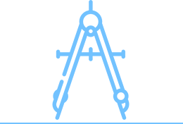
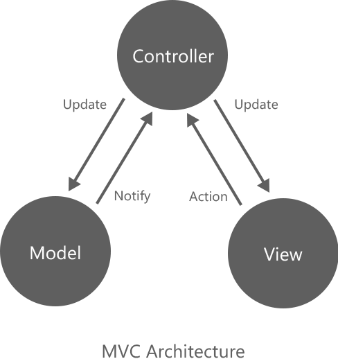
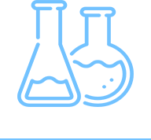

Nice to Meet You.
はじめまして、陳と申します。
杭州電子科技大学からの卒業生として、日本の大学の大学院に進学することを目指します。
専門はコンピュータサイエンスで、コンピュターに関する様々のことを学んでいました。
すべての科目の中で、特にComputerのもともと——コーディング、つまりプログラミングに深い興味を持ち、自分に満足させる成績を収めました。
「趣味、得意分野」
私は、デザインについての知識をしっかり勉強したことがあります。
大学に入学してから、どんな理由はもう覚えていないけど、あの時にビデオ編集技術の勉強がはじめました。
その上、デザイン感があるユーザーインタフェースの設計、制作を含むテクニック、独学してみました。
一見すると、デザインはプログラミングにそんなに深い関係がないものでしょう。
実は、デザインのプロジェクトはプログラミングのプロジェクトとの共通点が多くて、両者は似ってるワークフローで出来る存在であります。
その後、2年以上のビデオ編集経験も身についた私が、 「Visual」 と 「Presentation」 、つまり、視覚的なことの重要さを感心しました。
「 Works. 」
そのおかげで、ソフトウェアをデザインしてる時に、色の調和、エレメントの動き、ユーザーからの視点などいろんな要素を合わせて考え、ユーザーインターフェイスのデザインも更に一段上がることになりました。
たまには、こういうものを作ってます。

よろしければ、こちらは私のBehanceです。
ほかの作品がご覧いただけます。
「プログラミングについて」
コンピュターの専門学生として、やはりプログラミングの技術力が高めなければなりません。 ずっとデザインのことに夢中になると、ちょっと本末倒置の状況になりやすいと思います。 大学の頃、学校の授業科目だけではなく、自分がLyndaやPlursightなどのオンラインコースサイトで独学しました。
C、C++とPHPを学校の授業またオンラインコースで勉強したことがありますが、 私は、普段アプリをウェブサイトの開発のとき、ほぼC＃を使ってます。
例えば、 BootstrapというFront-end Frameworkを勉強し、スマホの画面サイズよってレイアウトが自動的に変更できるサイトのコーディングすること、 サイトの表現力をより高く向上するために、ｊQueryとｊQueryUIを使ってアクセス者にUXを高めること、 また、ASP.NET MVC5を利用してウェブサイトのサーバー側の機能を開発することです。
こちらは、私のGithubです。 普段はただコードの保存場所として使ってますが、活用しているとは言えません。
「 Connections. 」
視覚を代表するデザイン、理性を代表するプログラミング、 私は、どちらでも、両方が好きです。 常に各方面の長所と短所を合わせて考えると、新たな発想が出来ます。
今後も、両者に技術力の向上のために、お互いの関係を考えながら勉強したいと思います。
「 Scheme. 」
大学の卒業プロジェクトのテーマは 「個人商店に向け全面的なシステムデザイン」 です。 上記の映像は、自分の作業で何を完成したのをうまく説明するために、卒業プロジェクトの展示するときにスライドを伴って使った映像です。
そして、最終成績をつけるとき、先生たちに 「優秀作品」 と評価されました。
まずは、サイトの機能を検討し、いわゆる、ソフトウェア要求分析を行います。 この中で、明確な要求を確定することは、一番重要です。
そして、ユーザーインタフェースのデザイン原稿を作成します。 基本的に、Photoshopやillustratorで各ページのプロトタイプを作成し、各元素のサイズ、スタイルをマークします。 原稿をページへでそのままに再現するように、この段階は不可欠です。 。
すべての原稿を完成した後、サイトの各ページをコーディングします。 この段階は、HTML+CSS+JavaScriptを利用し、できるだけ原稿を従ってページを作成します。 その上、ｊQueryとｊQuery UIでアニメションの制作、フォントデータの処理、Ajaxの動作を管理し、 Bootstrap 3.0のResponsive機能を利用し、スマホの画面サイズによって自動に変更することも可能です。
最後は、サイトサーバー側機能の開発です。 IDEはVisual Studio 2015 Communityで、 M-モデル、V-ビュー、Controller-コントローラという3つの要素に分割するMVCモデルに基づく.NET ASPMVC Frameworkを使用します。 データの取得と保存は、既存のEntity Frameworkで処理します。 商品情報や宣伝記事やオンライン注文などお客に向けの機能はもちろん、マスター（サイト管理者）がシステムをアクセスしてすべての内容を管理することもできます。
「その他」
2016年9月、日本に来ました。 今はしばらく東京の日本語学校在学中です。
2012年、大学に入学した頃、日本語の勉強を始めました。 2014年、大学三年生としてのとき、日本語能力試験レベルN1を合格しました。
未来には、やはりコンピュター関連の仕事をしたいと思います。
「 Academic 」
まずは入学試験をを受けて、修士として大学院で勉強したいと考えています。 できるなら、博士課程まで進学したいと思います。
語学力向上のためには、日本語と英語をしっかり習って、活用できる要求に達するように勉強します。
研究に対しても、優秀な研究者に比肩する目標へ真面目に進めたいと思います。
「最後までご覧いただき、心より感謝致します。」
EDITOR: 陳薛亮 (チンセツリョウ) DATE: 2017.2.27